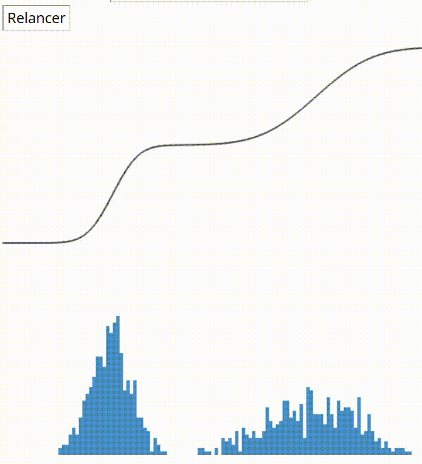

HAX712X - Software development for data science (2020-2024)

This is a master level course on Software development for data science, using Python.
Details can be found here: HAX712X.
Course language: 🇬🇧
HAX603X - Stochastic Modeling (2023-2024)

This is an undergraduate course on stochastic modeling and Monte Carlo methods, with exercises in Python.
Details can be found here: HAX603X - Stochastic Modeling.
Course language: 🇫🇷
HAX606X - Convex optimization (2020-2023)

This is an undergraduate course on convex optimization Exercises are proposed in Python.
Details can be found here: HAX606X - Convex optimization.
Course language: 🇫🇷
HLMA310 - Scientific Python (2018-2020)
This is an undergraduate course introducing Python for scientific computing.
Details can be found here: HLMA310 - Scientific Python.
Course language: 🇫🇷
STAT593 - Robust statistics (2018-2019)
This is a grade course on robust statistics and optimization.
Details can be found here: STAT593 - Robust statistics.
Course language: 🇬🇧
SD204 - Linear Models (2016-2018)
This is an undergraduate course on linear models.
Details can be found here: SD204 - Linear Models.
Course language: 🇬🇧
SD3 - Descriptive Statistics (2010-2011)
This is an undergraduate course on descriptive statistics.
Details can be found here: SD3 - Descriptive Statistics.
Course language: 🇫🇷
MDI720 - Linear Models (2013-2018)
This is an undergraduate course introducing linear models.
Details can be found here MDI720 - Linear Models.
Course language: 🇫🇷
M53010 - Econometrics (2009-2010)
This course is mostly about linear models in econometrics.
Details can be found here: M53010 - Econometrics.
Course language: 🇫🇷
M2MO - Statistical Learning (2013-2018)

This contains Master 2 exercices on statistical learning.
Details can be found here: M2MO - Machine Learning.
Course language: 🇫🇷
HMMA308 - Statistical Machine Learning (2018-2021)

This course is mostly about supervised techniques in Machine Learning.
Details can be found here HMMA308 - Statistical Machine Learning.
Course language: 🇫🇷
HMMA307 - Advanced Linear Models (2019-2021)
This is an undergraduate course introducing advanced linear models (ANOVA, Mixed-effects models, etc.).
Details can be found here: HMMA307 - Advanced Linear Models.
Course language: 🇫🇷 and 🇬🇧
HMMA238 - Scientific Software Development (2018-2019)
This is a master level course introducing scientific computing and modern software practices.
Details can be found here: HMMA238 - Scientific Software Development.
Course language: 🇬🇧
HMMA237 - Advanced time series (2018-2019)
 This is an undergraduate course introducing advanced time series analysis.
This is an undergraduate course introducing advanced time series analysis.
Details can be found here: HMMA237 - Advanced time series.
Course language: 🇫🇷 and 🇬🇧
HLMA408 - Data science for ecology (2018 - 2021)
 This is an undergraduate course introducing statistics and data visualisation.
This is an undergraduate course introducing statistics and data visualisation.
Details can be found here: HLMA408 - Data science for ecology.
Course language: 🇫🇷
CR12 - Machine Learning (2013-2015)
This is a Master 2 course on Machine learning (with Z. Harchaoui, J. Mairal and L. Jacob).
Details can be found here:
Course language: 🇬🇧